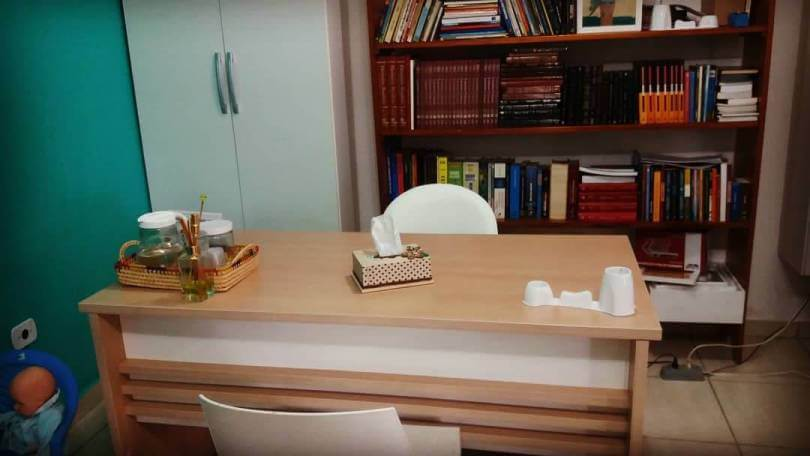
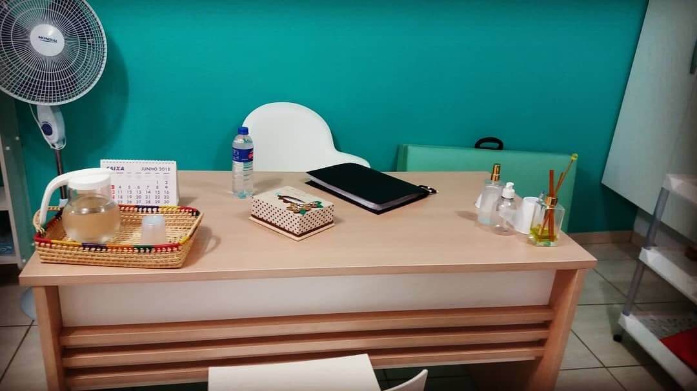
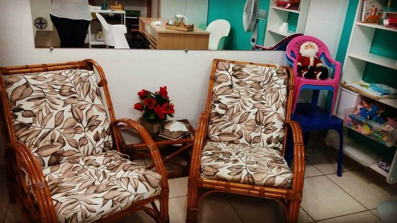

Saúde Mental
Em sua constituição, a Organização Mundial da Saúde (OMS) define
que “saúde é um estado de completo bem-estar físico, mental e social e não apenas a mera
ausência de doença ou enfermidade”. Tal definição é importante por apontar que a
saúde mental de alguém não é apenas afetada por um transtorno psicológico ou
deficiência. Ao destacar, repetidamente, que saúde mental está relacionada ao
bem-estar, instituições especializadas buscam desconstruir a cultura de que só devemos
prestar atenção à saúde mental em casos mais grave.
Psicologia Breve
A psicoterapia breve baseia-se no "tripé": foco, atividade,
planejamento. A especificidade da psicoterapia breve é atingir os objetivos
terapêuticos em um prazo bem mais curto de tempo.
Entende-se por foco, a área a ser trabalhada no processo, o material consciente e
inconsciente do paciente. É necessária maior atividade por parte do terapeuta, e
planejamento por parte deste, que inclui a descrição da intenção dos objetivos
terapêuticos dentro de um limite de tempo.
Psicoterapia de grupo
É um tipo de psicoterapia que envolve mais de três pessoas
sendo atendidas ao mesmo tempo. Nesse caso, além de ter contato com o psicólogo,
o paciente conta também com a escuta e a colaboração dos outros participantes. Em geral,
essas sessões têm duração de uma hora e uma hora e meia.

Imagem 1

Imagem 2

Imagem 3